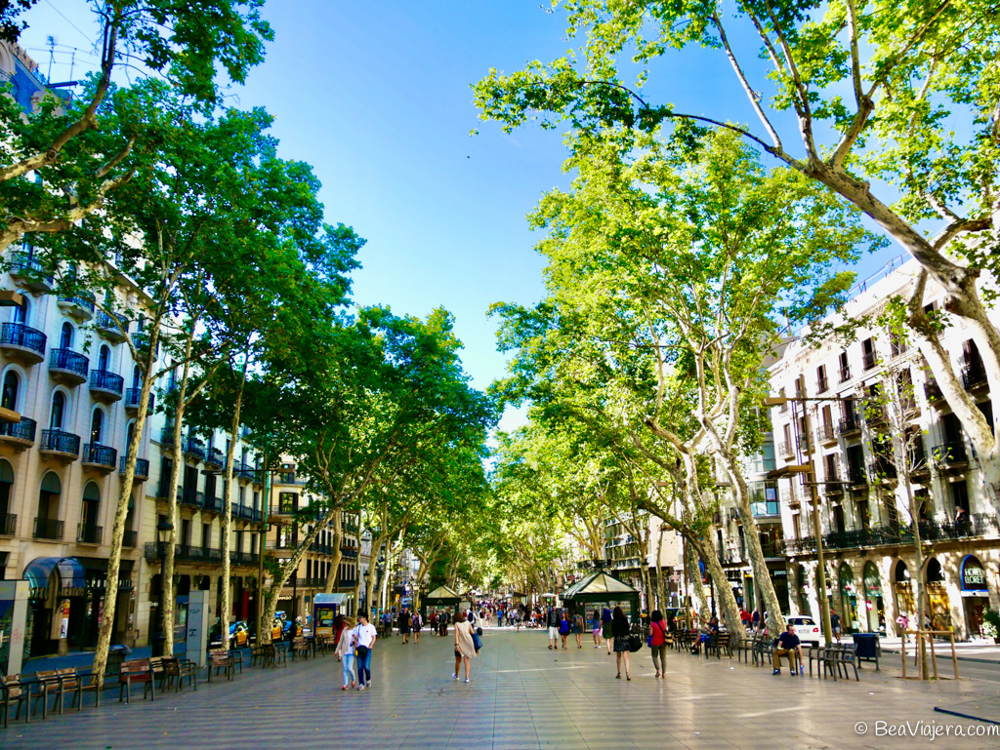
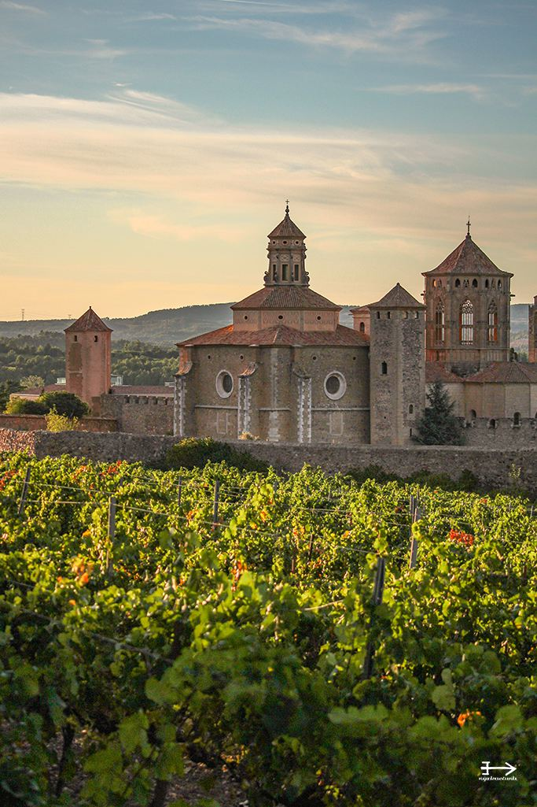
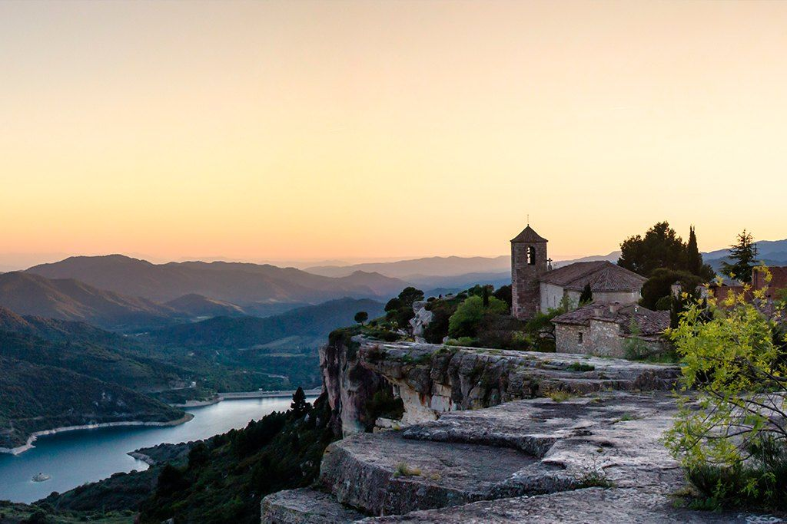
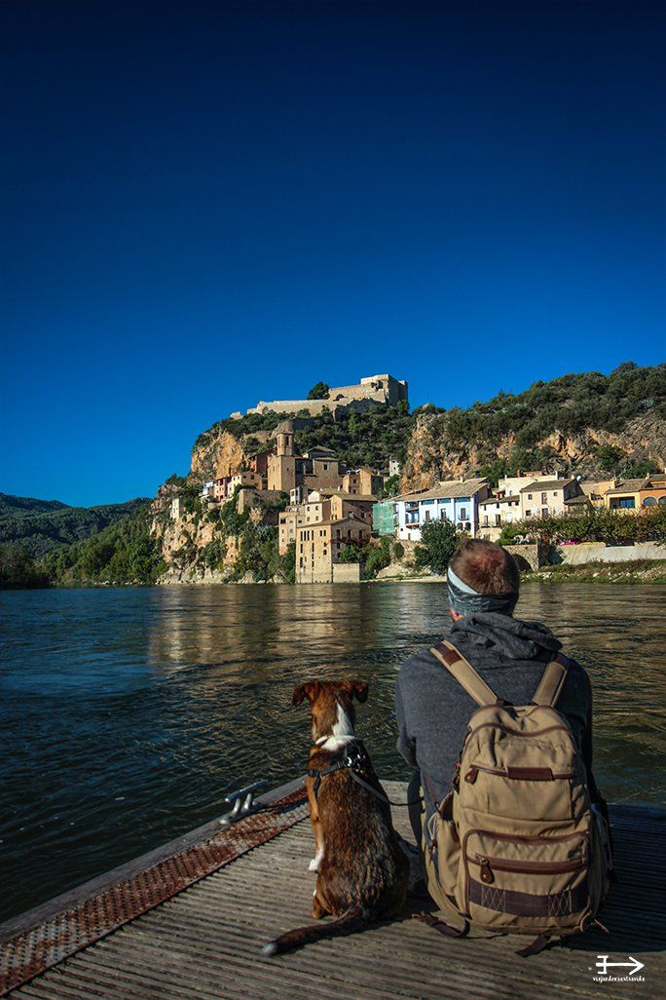

Con una extensión de más de 17 hectáreas, el Parque Güell está cubierto por formas onduladas, columnas con aspecto de árboles, figuras de animales y formas geométricas. La mayor parte de las superficies están decoradas con mosaicos realizados con trocitos de cerámica de colores.

La Rambla es una larga avenida barcelonesa, de 1,2 km de longitud exactamente, que recorre el trayecto desde La Plaza de Catalunya hasta el Mirador de Colón frente al antiguo puerto de la ciudad.

La Sagrada Familia es el monumento más conocido y característico de Barcelona. Como máximo exponente de la arquitectura modernista creada por Gaudí, miles de turistas acuden cada día a contemplar el curioso aunque inacabado templo.

El barrio Gótico es el núcleo más antiguo de la ciudad y su casco antiguo, y es donde se encuentran la mayoría de los edificios y calles con significado histórico de la ciudad. A lo largo de los siglos ha asumido el papel de centro de representación política e institucional.

El mercado medieval de Montblanc es uno de los más auténticos de Cataluña. Cada año durante el mes de abril, con motivo de la Setmana Medieval de Sant Jordi de Montblanc, paradas de embutidos, quesos o dulces inundan el casco antiguo de Montblanc compartiendo espacio con artesanos de todo tipo como herreros, carpinteros, etc.

En el pueblo de Farena, en la comarca de l’Alt Camp, hay un sendero que se adentra por los bosques hasta llegar hasta un oasis en medio de las Montañas de Prades, el Toll de l’Olla. Se trata de una profunda poza en el rio Brugent, por la que se precipita un pequeño un salto de agua desde las rocas superiores.

Siurana es un pequeño pueblo de casas y callejuelas empedradas situado al borde de un precipicio de roca caliza. Con unas espectaculares vistas al Pantano de Siurana, la Sierra de Montsant, y a las Montañas de Prades, se podría decir que Siurana es todo un espectáculo para la vista se mire por donde se mire.

Encaramado a una roca a orillas del Ebro, se encuentra el pueblo de Miravet. Esta situado en un meandro del río sobre un peñón arenisco por el que suben sus casas en todos vainilla y ocre. Miravet es un pueblo para pasear por las calles del Cap de la Vila, visitar la Iglesia Vella o asomarse al espectacular mirador de la Plaça Sanaqueta.